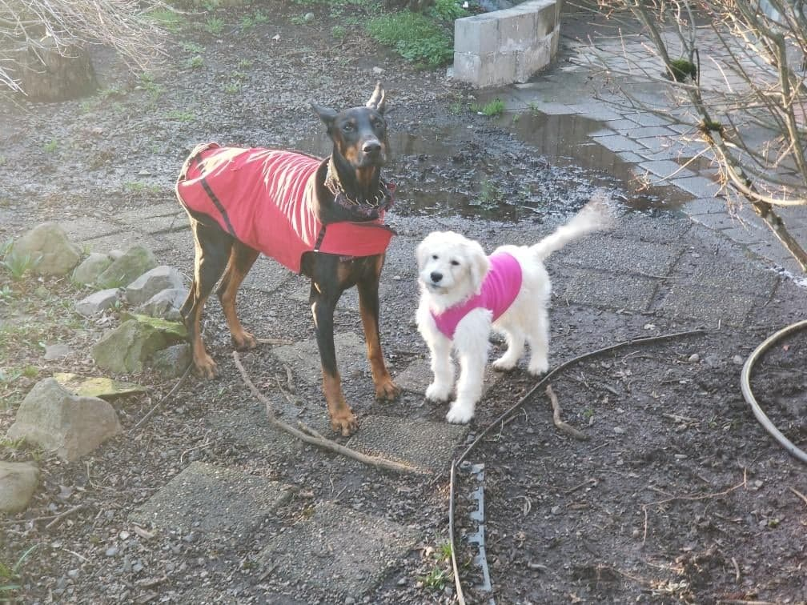
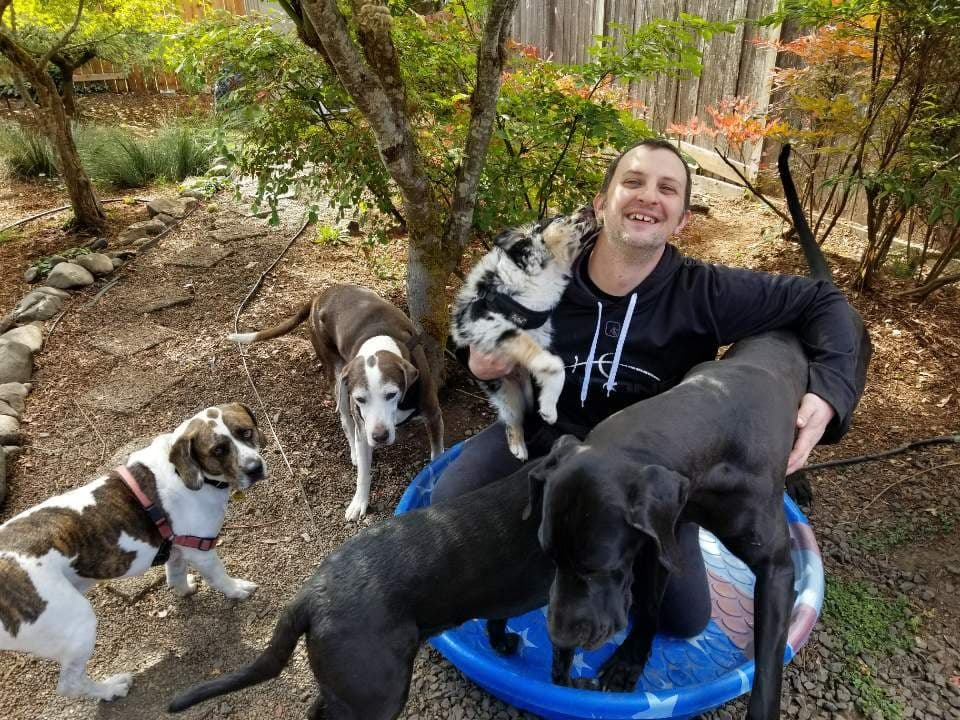
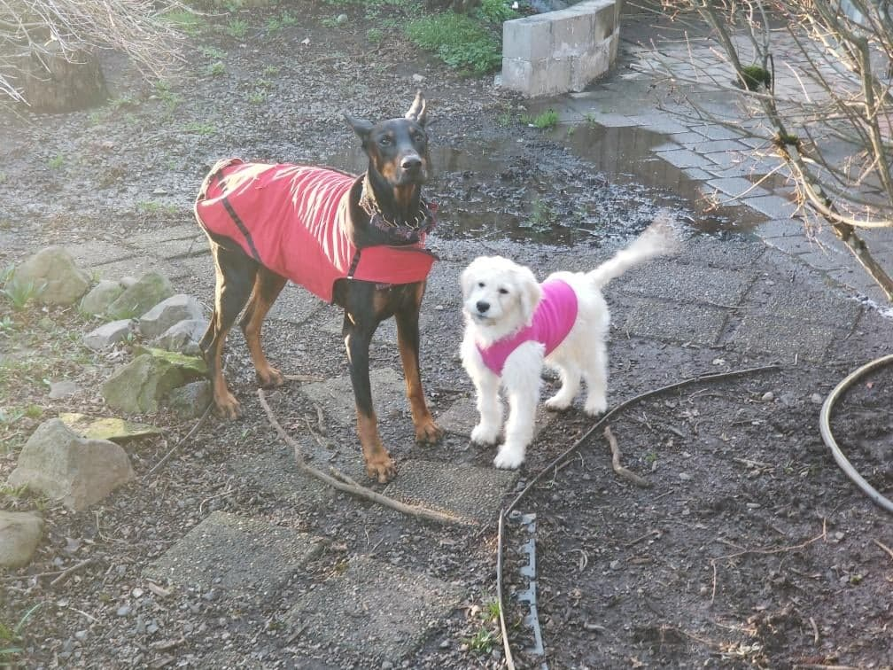
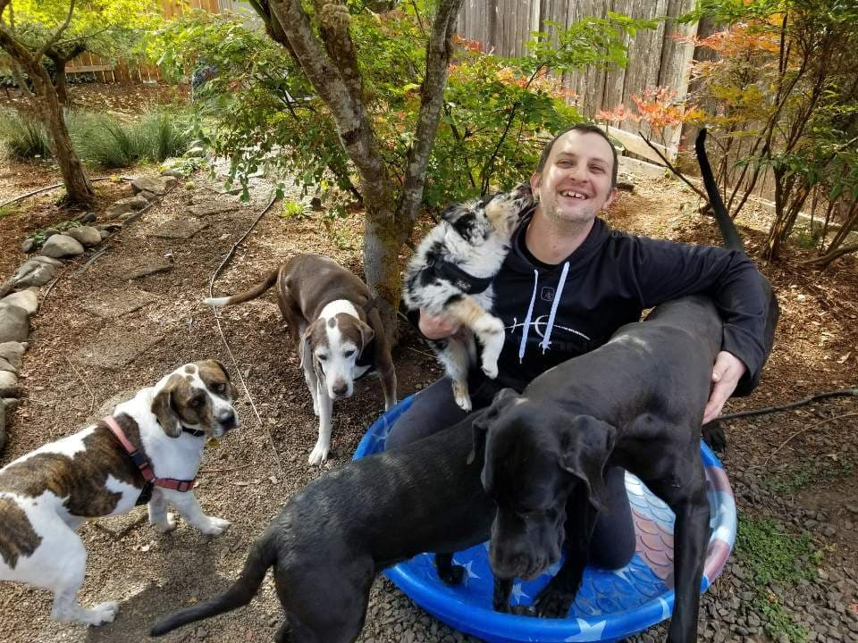

Hi there! My name is Desmond. I had 2 dogs of my own for over a decade (the big guy looked and acted like Marmaduke, no joke), so I'm very enthusiastic about dogs and their care. I became the head Organizer of the meetup group "Eugene Dog Walks Meetup" in May. We are currently fostering an awesome 11 y.o. Chihuahua mix named "Bubba". After about 6 weeks of fostering "Bentley", we decided to adopt him! Both do very well with all the other dog comings and goings here. I'm home full-time, so my schedule is very flexible. I take weekend, holiday, late night, early morning, and last-minute bookings as well. So, let's setup a meet and greet. I really look forward to meeting you and your furry friends!
I do numerous activities with dogs. I toss a tennis ball or frisbee for dogs who are into that. Also, we have 2 kiddy pools for dogs to cool off in, If your four-legged friend likes car rides, those can happen occasionally too :) And as long as you and your dog(s) are ok with it, a dog park visit is always a possibility (I have a minivan, so your dog will stay dry and comfortable during transport). With most dogs, an exhausted dog is a relaxed, happy dog, so I tend to focus on having the dogs play with each other as well as me in our amazingly landscaped big back yard (haven't met a dog who has complained about the yard or the level of activity here yet). For cold, wet days we have a covered back porch and a heated garage so that dogs can stay dry and warm. Of course, they still have access to the yard if they feel like gettin' a bit muddy for fun too!